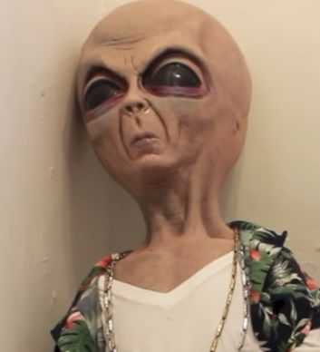
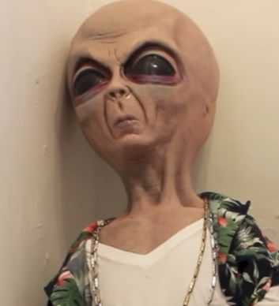

My story is about Fiachra Panteras, a middle-aged man who owns a bakery in Poland of 1939. His country is overrun by soldiers of the Nazi regime, and he has to make a decision whether to leave his frail old father behind and join the remainder of his family in America, or stay with his father in Poland in what appears to be very grim times. If he chooses to leave his country, then he is offered a chance to work with the Mexican cartels for his prowess in baking and creating strudels. If he chooses to stay in Poland, his shop is overrun by the Nazis and he and his father are forced to surrender to the Nazi general's rule or risk execution.
a) In order to create the story, Kent and I had to learn how to plot out our story using a story map, and create various scenarios for each decision that the reader may choose to take.
b) The only problem our story had was figuring out which direction a certain decision would take Fiachra, the protagonist.
c) I feel that our work is proficient, however it could have been longer, as it was fairly difficult for us to develop our story with the two extremes of decisions that we had created. I liked the humorous style of the story, but disliked how the story lacked a solid sense of logic or meaning behind it.
d) I found myself liking the stories that gave a lot of possible decisions, while also maintaining an immersive and interesting story.
e) I would improve upon the detail in each decision, and make each decision more well-defined, instead of labelling them as "1" and "2".